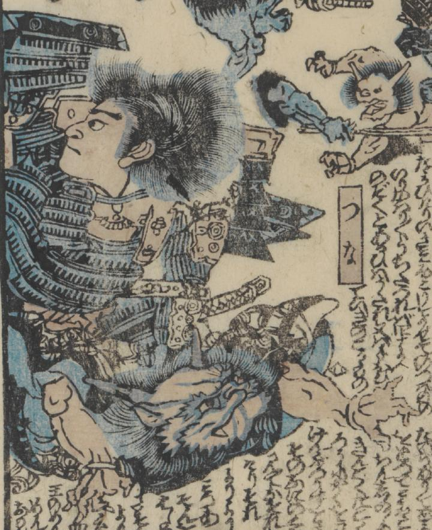

← 图鉴索引

酒呑童子の配下の鬼。渡辺綱に組み敷かれ、地面に倒れている。
著作者：一龍齋國久／出典：親書誌：U426_nichibunken_0431：頼光一代記圖繪／日付：2016／資源識別子：U426_nichibunken_0431_0011_0004
Copyright (c)2010- International Research Center for Japanese Studies, Kyoto, Japan. All rights reserved.